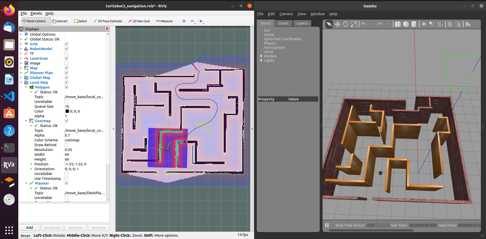

|
Abhishek Jha I'm an incoming computer science graduate student at New York University, Courant. I completed my bachelor's from Delhi Technological University in New Delhi.My interests span machine learning, computer vision, robotics, and large language models, with a focus on chain-of-thought reasoning and on building reliable, interpretable decision-making reasoning systems across modalities |
{kind=link}
ResearchMy interests span multi-agent coordination, control, vision, LLMs, and chain-of-thought reasoning. I study how to turn perception into verifiable action and create agents that plan step by step, justify decisions, honor safety constraints, and scale to crowded, partially observed environments in both software and robotics. My goal is to create reliable, interpretable reasoning agents that spans LLM tools and embodied systems explaining their choices, and transfer from simulation to real settings across robots, interactive assistants, and complex software workflows. |
|
|
Decentralized Safe and Scalable Multi-Agent Control under Limited Actuation
Vrushabh Zinage, Abhishek Jha, Rohan Chandra, Efstathios Bakolas ICRA, 2025 project page / arXiv A single decentralized control algorithm using neural ICBFs and gradient optimization that ensures safe, input-constrained, deadlock-free control of 1000+ agents in cluttered environments. |
|
|
PV-S3: Advancing Automatic Photovoltaic Defect Detection using Semi-Supervised Semantic Segmentation of Electroluminescence Images
Abhishek Jha, Yogesh Rawat, Shruti Vyas Engineering Applications of Artificial Intelligence, Elsevier project page / arXiv A semi-supervised segmentation model (PV-S3) that detects defects in photovoltaic EL images using only 20% labeled data, outperforming state-of-the-art supervised methods and reducing annotation costs by 80%. |
|
|
Enhancing ASD Diagnosis with Contrastive and Non-Contrastive Models from Neuroimaging Data
Abhishek Jha, Ishita Mehta , Kainat Khan, Rahul Katarya ICMNWC 2024 paper A fine tuned transfer learning model using the SimCLR and SwAV models that predicts autism from resting-state fMRI scans, showcasing the potential of contrastive and non-contrastive models for robust neuroimaging analysis. |
|
|
Strategic Pseudo-Goal Perturbation for
Deadlock-Free Multi-Agent Navigation in Social Mini-Games
Abhishek Jha, Tanishq Gupta, Sumit Singh Rawat, Girish Kumar ICCRE, 2024 arXiv Introduced Strategic Pseudo-Goal Perturbation (SPGP), that resolves deadlocks in multi-agent navigation by guiding agents through strategic pseudo-goals, enhancing safety and efficiency in complex scenarios. |

|
Diagnosis support model for Autism spectrum disorder using Neuroimaging data and Xception
Abhishek Jha, Kainat Khan, Rahul Katarya ELEXCOM, 2023 paper A transfer learning model using the Xception ConvNet predicts autism from resting-state fMRI scans, demonstrating the feasibility of early diagnosis through deep learning on brain imaging data. |

|
Real Time Analysis of Material Removal Rate and Surface Roughness for Turning of Al-6061 using ANN and GA
Abhishek Jha, Baibhav Kumar, Ashok Kumar Madan IJRESM, 2022 paper An integrated ANN and Genetic Algorithm model predicts and optimizes Material Removal Rate and surface roughness in Al 6061 turning operations, enhancing machining precision through simulation-based methods. |
Projects |
|
|
Benchmarking Deadlock Resolution in Social Mini-Games
Supervisor: Prof.Rohan Chandra / Code A Benchmark and Survey of Deadlock Resolution in Multi-Robot Navigation in Social Mini-Games |
|

|
Autonomous navigation of turtlebot using SLAM
Code Autonomous navigation and trajectory planning of a robot using Robot Operating System (ROS). A maze is created in gazebo for the robot to determine the best possible trajectory with collison avoidance. Probablistic localization method is used for navigation. Adaptive Monte Carlo Localization(AMCL) node and slam_gmapping package is used for localization of robot and mapping of robot. Rviz interface is used for the simulation of robot and creating the cost map for the travel of robot. |
|
|
Obstacle Avoidance of Unmanned Aerial Vehicle using LiDAR
Code Obstacle avoidance implemented in Robot operating system for Unmanned Aerial Vehicle (UAV) using LiDAR scan data. Hector quadrotor package is used for spawning the drone in the gazebo environment. Readings from SONAR sensor with python script is used for flying the drone to a certain height. LiDAR readings are used to detect obstacles in the surroundings. |

|
Path Planning of 2D point robot using discrete motion planning algorithms
Code Path planning of point robot for finding shortest path between start and goal position. Implemented Informed and Uninformed search algorithms for the path planning problem. A random 2D enivronment is created with obstacles for evealuation of searching algorithms. A* and Dijkstras algorithm is implemented for obtaining the shortest path. Investigated the perofrmance by implementing other search based algorithms such as Best first, Depth First and Breadth First for finding the shortest distance. Given below are the images of search done by the various algorithms. |
|
This website is created upon Jon Barron's template. |